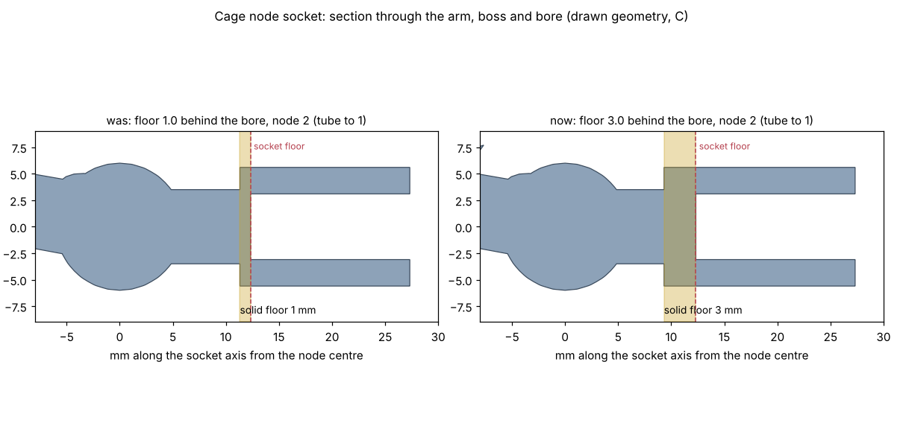

<title>Cage Node Socket Floor</title>
<style>
:root{--bg:#f6f7f8;--fg:#1d2329;--muted:#5d6872;--line:#d6dbe0}
@media (prefers-color-scheme:dark){:root:not([data-theme="light"]){--bg:#14181c;--fg:#e4e8ec;--muted:#9aa5ae;--line:#2c343b;color-scheme:dark}}
:root[data-theme="dark"]{--bg:#14181c;--fg:#e4e8ec;--muted:#9aa5ae;--line:#2c343b;color-scheme:dark}
body{background:var(--bg);color:var(--fg);font-family:system-ui,sans-serif;line-height:1.5;padding:24px 16px 48px}
main{max-width:1000px;margin:0 auto;display:grid;gap:16px}
h1{font-size:1.6rem;margin:0} p{margin:0;max-width:68ch;color:var(--muted)}
figure{margin:0;background:#fff;border:1px solid var(--line);border-radius:6px;overflow-x:auto}
img{display:block;width:100%;min-width:700px}
</style>
<main>
<h1>Cage node sockets: a 3 mm solid floor</h1>
<p>Node 2 failed the solid check after the base loop dropped. Each socket's arm joined its boss only through a 1 mm floor behind the bore, which was too thin a neck. The floor behind every socket is now 3 mm of solid PETG. All 14 node designs pass the check on their drawn shape.</p>
<figure></figure>
<p>Alternative tried: arms that flare out to the boss. The neighbouring bores cut slivers off the flares, so the check still failed.</p>
</main>
